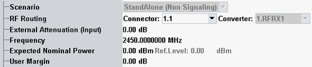

The measurement is configured using the parameters in the "Multi-Evaluation Configuration" dialog. The following parameters configure the RF input path.
See also: "Connection Control (Measurements)"

This software version supports only a standalone scenario for non-signaling LR-WPAN measurements.
Remote command:Selects the input path for the measured RF signal, i.e. the input connector and the RX module to be used.
Defines the value of an external attenuation (or gain, if the value is negative) in the input path. The power readings of the R&S CMW are corrected by the external attenuation value.
The external attenuation value is also used in the calculation of the maximum input power that the R&S CMW can measure.
If a correction table for frequency-dependent attenuation is active for the chosen connector, then the table name and a button are displayed. Press the button to display the table entries.
Center frequency of the RF analyzer. Set this frequency to the frequency of the measured RF signal to obtain a meaningful measurement result.
See also: "LR-WPAN Signal Properties".
Remote command:Sets the analyzer in accordance with the nominal power of the RF signal to be measured. The nominal power is the average output power at the DUT during the measurement intervals where the RF transmitter is on. The "Ref. Level" is calculated as the expected peak power at the output of the DUT:
Reference level = Expected Nominal Power + User Margin
The actual input power at the connectors corresponds to "Reference Level" minus the "External Attenuation (Input)" value. If all power settings are configured correctly, it must be within the level range of the selected RF input connector. Refer to the data sheet.
Remote command:Margin that the R&S CMW adds to the "Expected Nominal Power" in order to determine its reference power ("Ref. Level"). The "User Margin" is typically used to account for the known variations of the RF input signal power, e.g. the variations due to a specific channel configuration.
A user margin of 3 dB is appropriate for the supported packet types.
Remote command: